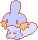
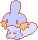

so, pokemon!
Pokemon is probably my longest standing fandom, and probably the closest one to my heart because it's something I've gotten to share with my brother over the years. With the exception of remakes (and tertiary games, those were more his), we've always gotten opposite versions, and honestly, he's way better at them than I've ever hoped to be.

versions i've played
generation i
generation ii
generation iii
generation iv
generation v

generation vi
generation vii
generation viii
generation ix
I'm not a pro, I'm not competitive or "optimal" about my runs, and I can probably count on one hand the number of times I've actually bothered to beat the elite four and gotten to play the post-game content, but I always have a good time and I've very fondly loved some of the QoL or not explicitly battle related mechanics they've implemented into the games even if they haven't seen the light of day outside of their respective generations. (like honestly, my ideal game would have day/night, weather, seasons, character/trainer card customization, some kind of cooking mechanic, and something a la camping and the wild area in sword in shield. also, can we be able to shine your gym badges every gen? and be able to take pictures with your team through the game? and let them follow you around?)
 
